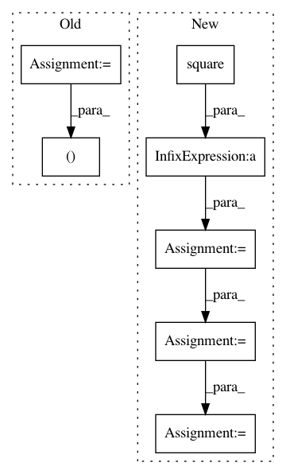

66e36bf51b453bb6b92d330d4d7845bdfbdfee99,neurosynth/base/dataset.py,Dataset,get_studies,#Dataset#Any#Any#Any#Any#Any#Any#Any#Any#Any#,241
Before Change
if peaks is not None:
found = set()
for p in peaks:
_xt, _yt, _zt = p
x = self.activations["x"]
y = self.activations["y"]
z = self.activations["z"]
After Change
x = self.activations["x"]
y = self.activations["y"]
z = self.activations["z"]
dists = np.sqrt(np.square(x - xyz[0]) + np.square(y - xyz[1]) +
np.square(z - xyz[2]))
inds = np.where((dists > 5.5) & (dists < 6.5))[0]
tmp = dists[inds]
found |= set(self.activations[dists <= r]["id"].unique())
results.append(found)
// Get intersection of all sets
In pattern: SUPERPATTERN
Frequency: 3
Non-data size: 7
Instances
Project Name: neurosynth/neurosynth
Commit Name: 66e36bf51b453bb6b92d330d4d7845bdfbdfee99
Time: 2018-05-04
Author: tyarkoni@gmail.com
File Name: neurosynth/base/dataset.py
Class Name: Dataset
Method Name: get_studies
Project Name: tensorflow/tpu
Commit Name: c6e29e832cb766ede23ad1b29ce583e397b67066
Time: 2019-05-28
Author: solitarylord@gmail.com
File Name: models/official/mask_rcnn/tpu_normalization.py
Class Name: BatchNormalization
Method Name: _moments
Project Name: deepfakes/faceswap
Commit Name: b7b1bd5c6f7892061a9915cd27d19360482d1fd8
Time: 2019-08-03
Author: vrooman.kyle@gmail.com
File Name: lib/model/losses.py
Class Name:
Method Name: gmsd_loss